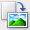

This mode allows you to make advanced scan settings such as the color mode, output resolution, image brightness and color tone.
This section describes the settings and functions available on the Advanced Mode tab.
When scanning from the ADF (Auto Document Feeder), documents are scanned without preview.
(1) Settings and Operation Buttons
(2) Toolbar
(3) Preview Area
 Note
NoteThe displayed items vary by document type and how the screen was opened.
Favorite Settings
You can name and save a group of settings (Input Settings, Output Settings, Image Settings and Color Adjustment Buttons) on the Advanced Mode tab, and load it as required. It is convenient to save a group of settings if you will be using it repeatedly. You can also use this to reload the default settings.
Select Add/Delete... from the pop-up menu and the Add/Delete Favorite Settings dialog opens.
Enter Setting Name and click Add. The name appears in Favorite Settings List.
When you click Save, the item appears in the Favorite Settings list and can be selected, along with the predefined items.
To delete an item, select it in Favorite Settings List and click Delete. Click Save to save settings displayed in Favorite Settings List.
NoteYou can set Add/Delete... in Favorite Settings after preview.
Save up to 10 items.
Input Settings
Specify the input settings such as the document type and size.
Output Settings
Specify the output settings such as the output resolution and size.
Image Settings
Enable/disable various image correction functions.
Color Adjustment Buttons
These buttons can be used to make fine corrections to the image brightness and color tones. You can adjust the image's overall brightness or contrast, and adjust its highlight and shadow values (histogram) or balance (tone curve).
Zoom
Zooms in on an image or the portion within the cropping frame. When the image is zoomed in, Zoom changes to Undo. Click Undo to return the display to its non-magnified state.
When multiple images are displayed in thumbnail view, clicking this button zooms in on the selected frame. Click (Frame Advance) at the bottom of the screen to display the previous or next frame.
NoteYou can also zoom in on an image by double-clicking the frame. Double-click the frame again to return the display to its non-magnified state.
Rescans the portion within the cropping frame at higher magnification.
NoteZoom rescans the image and displays high-resolution image in Preview.
(Enlarge/Reduce) on the Toolbar zooms in on the preview image quickly. However, the resolution of the displayed image will be low.
Preview
Performs a trial scan.
Scan
Scanning starts.
NoteWhen scanning starts, the progress will be displayed. Click Cancel to cancel the scan.
When scanning is completed, a dialog prompting you to select the next action may open. Follow the prompt to complete. For details, see Status of ScanGear dialog after scanning in "Scan Tab" (Preferences dialog).
It will take time to process the images if the total size of the scanned images exceeds a certain size. In that case, a warning message appears. It is recommended that you reduce the total size. To continue, scan in whole image view.
Preferences...
The Preferences dialog opens and you can make scan/preview settings.
Close
Closes ScanGear (scanner driver).
Toolbar
You can adjust or rotate preview images. The buttons displayed on the Toolbar vary by view.

 (Thumbnail) /
(Thumbnail) /  (Whole Image)
(Whole Image)
Switches the view in the Preview area.
(Clear)
Delete the preview image.
It also resets the Toolbar and color adjustment settings.
(Crop)
Allows you to specify the scan area by dragging the mouse.
(Move Image)
If an enlarged image is too large to fit in the Preview area, you can click this button and drag the image across the screen until the part you want to see is displayed. You can also move the image using the scroll bars.
(Enlarge/Reduce)
Click this button then click on the image to enlarge it (zoom in). To reduce it (zoom out), click on the image while pressing the option key.
 (Rotate Left)
(Rotate Left)
Rotates the preview image 90 degrees counter-clockwise.
- The result will be reflected in the scanned image.
- The image returns to its original state when you preview again.
 (Rotate Right)
Rotates the preview image 90 degrees clockwise.
- The result will be reflected in the scanned image.
- The image returns to its original state when you preview again.
 (Auto Crop)
(Auto Crop)
Displays and adjusts the cropping frame automatically to the size of the document displayed in the Preview area. The scan area is reduced every time you click this button if there are croppable areas within the cropping frame.
 (Check All Frames)
(Check All Frames)
This button is available when two or more frames are displayed.
Selects the checkbox of the image in thumbnail view.
 (Uncheck All Frames)
(Uncheck All Frames)
This button is available when two or more frames are displayed.
Deselects the checkbox of the image in thumbnail view.
(Select All Frames)
This button is available when two or more frames are displayed.
Selects the image in thumbnail view and the image will be outlined in blue.
 (Select All Cropping Frames)
(Select All Cropping Frames)
This button is available when there are two or more cropping frames.
All cropping frames will be displayed in thick broken lines. The settings will be applied to all the cropping frames.
 (Remove Cropping Frame)
(Remove Cropping Frame)
Removes the selected cropping frame.
(Information)
Displays the version of ScanGear and the current scan settings (document type, etc.).
 (Open Guide)
(Open Guide)
This page appears.
Preview Area
This is where a trial image is displayed after you click Preview. You can also check the results of the settings (image corrections, color adjustments, etc.) made in "Settings and Operation Buttons."
(Thumbnail) is displayed on the ToolbarThumbnails of images cropped to the document size are displayed. Only the images with the checkbox selected will be scanned.
NoteWhen multiple images are previewed, different outlines indicate different selection status.
- Focus Frame (thick blue outline): The displayed settings will be applied.
- Selected Frame (thin blue outline): The settings will be applied to the Focus Frame and Selected Frames simultaneously. You can select multiple images by clicking them while pressing the command key.
- Unselected (no outline): The settings will not be applied.
(Whole Image) is displayed on the ToolbarItems on the Platen are scanned and displayed as a single image. All portions in the cropping frames will be scanned.
NoteYou can specify the scan area (cropping frame) on the displayed image. In thumbnail view, you can only create one cropping frame per image. In whole image view, you can create multiple cropping frames.
 Scanning Multiple Documents from the ADF (Auto Document Feeder) in Advanced Mode
Scanning Multiple Documents from the ADF (Auto Document Feeder) in Advanced Mode